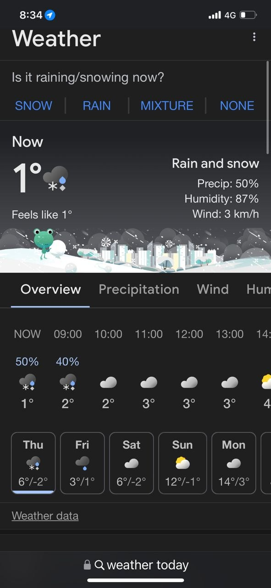
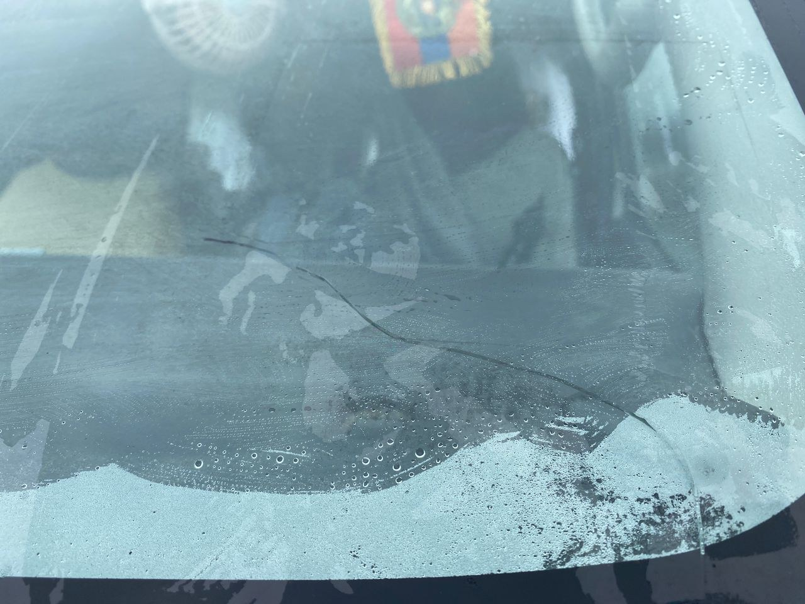
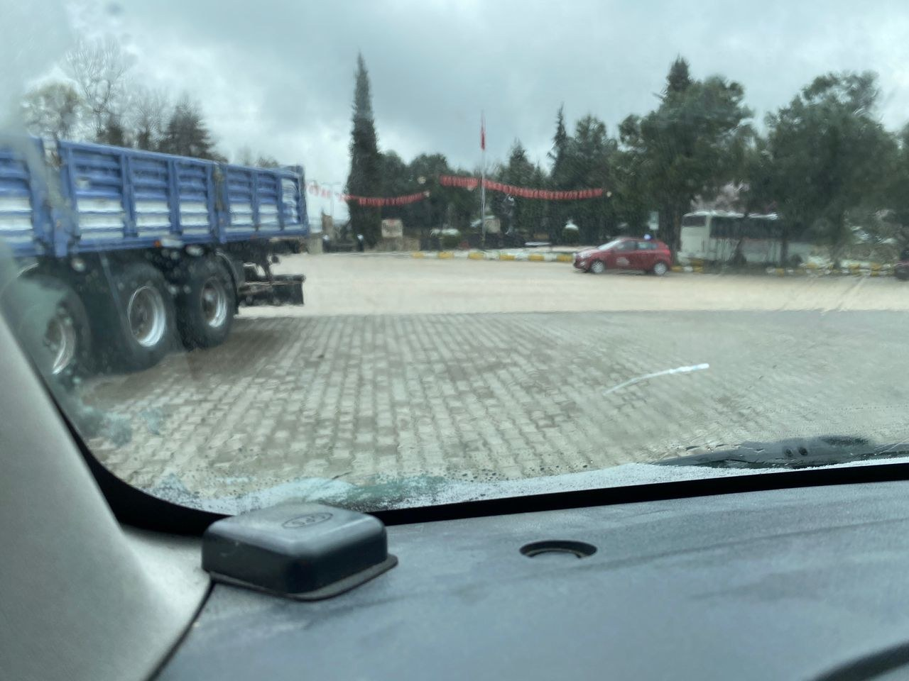

Real Story · 中文
有些地方，不是删掉了，就真的离开你的路。
Safranbolu，在一年前做 journey planning 的时候，我其实就想来。 可是后来因为各种原因，它不能放进正式行程里面。 所以我以为，这个地方已经从这趟旅程里拿掉了。
可是在 CampOluza, Sinop 的时候，Ali 老板跟我说： 一定要去 Safranbolu 和 Sakarya。 我就很听话地开过来。
到了以后，愈想愈不对路。 这个地方怎么好像不是普通路过的地方？ 我赶快找亚洲旅游台来看。 天！我竟然到了蕃红花城。

Road Reality
Then I found the windscreen crack.
Around this time, I also noticed a small crack on Toyotaki’s windscreen. I think it may have happened earlier during the highway roadside breakdown, when I used the snow shovel to clear snow and ice.
Overseas, changing a windscreen would be difficult and costly. So I had no choice but to bear with it and continue the journey, planning to replace it only after returning to Malaysia.


English Memory Summary
A destination removed from the plan came back by another person’s voice.
A year before the journey, Safranbolu had already appeared in Tuzi’s planning. She wanted to visit, but for route reasons it was later removed from the itinerary. At CampOluza in Sinop, Ali recommended that she go to Safranbolu and Sakarya.
Tuzi followed the suggestion and reached Safranbolu. Only after arriving did she realize that this was the Saffron City she had once wanted to visit. A deleted destination had returned, not through the original plan, but through someone met on the road.
The same chapter also carried a practical road problem: a small windscreen crack. Because replacing the windscreen overseas was difficult and costly, Tuzi had to continue with it until returning to Malaysia.
Heart Statement
有些地方，不是你删掉了，它就真的离开你的路。
It only changed hands. Someone else said its name, and Safranbolu returned to the route.